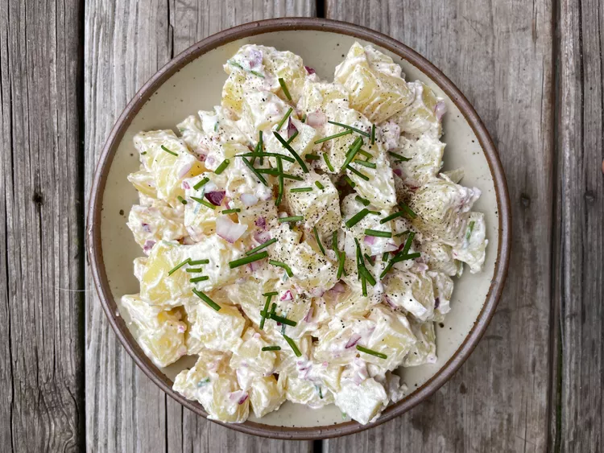

Sour Cream & Onion Potato Salad

Description
An easy to make potato salad combined with a sour cream dressing and onion powder.
Ingredients
- 2 1/2 lb yukon gold potatoes, peeled
- 1/2 cup sour cream
- 2 tablespoons red wine vinegar
- 2 teaspoons honey
- 2 teaspoons dijon mustard or stone ground mustard
- 1 clove clove garlic, finely chopped or pressed
- 1 teaspoon onion powder
- 1/4 tsp kosher salt
- 1/4 tsp ground black pepper
- 1/8 medium red onion, finely chopped
- 1 tablespoon chopped chives
Steps
- Place potatoes in a large pot of salted water, then bring to a boil over high heat. Reduce the heat to a simmer and cook until the potatoes are almost fork tender, about 15 minutes. Drain the potatoes in a colander and place a dry kitchen towel over top. Let the potatoes steam until they are fork tender, about 20 minutes more.
- Meanwhile, mix together sour cream, red wine vinegar, honey, Dijon, garlic, onion powder, salt and pepper until smooth and combined.
- Once the potatoes have cooled, cut them into 1-inch pieces. Transfer the potatoes to a large bowl. Add red onion, the sour cream dressing, and chives. Gently toss to combine until all the potato pieces are evenly coated in dressing. Garnish with more chives and chopped red onion, if desired. Serve immediately or chill in the fridge until ready to eat.